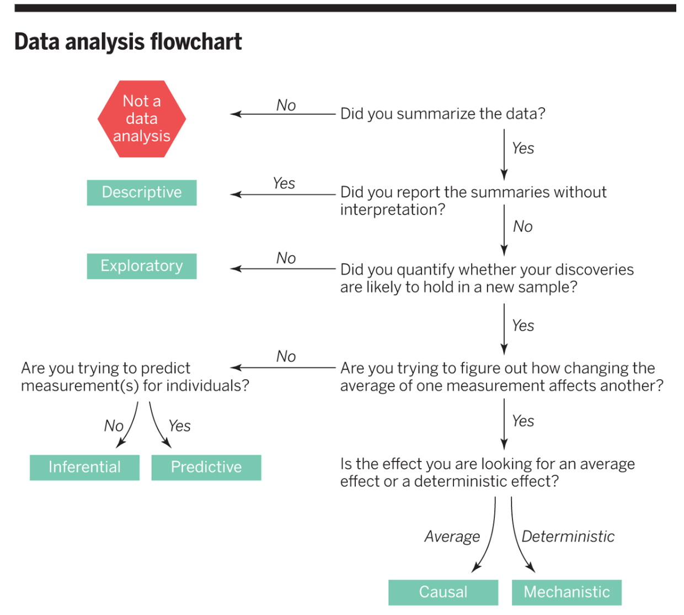

What is the question?
Practice for DSCI 522 data analysis project
What is the question?
So you know the type of question, now what?
.pull-left[ This helps narrow down the possibilities of the kind of analysis you might want to do!
–
For example, if you have the question: “How many viral illnesses will someone have next year?” and you identify that it is predictive. You could narrow down that some kind of statistical or machine learning model might help you answer that.
–
Then you need to go a step deeper and look at the data that you have, and see which kind of statistical or machine learning model is most suitable for your data. ]
.pull-right[ 
Source: scikit-learn algorithm cheat sheet ]
Another example
.pull-left[ For example, if you have the question: “Is the gestational length of first born babies the same as that of non-first borns?” and you identify that it is inferential. You could narrow down that some kind of statistical inference approach might help you answer that.
–
Then again, you need to go a step deeper and look at the data that you have, and see which kind of statistical inference approach is most suitable for your data. ]
.pull-right[ 
Source: https://onishlab.colostate.edu/summer-statistics-workshop-2019/
Or for another, see this website: http://www.biostathandbook.com/testchoice.html ]
Practice
Case 1
Question: Is a yet undiagnosed patient’s breast cancer tumor malignant or benign?
Data:
| ID | Radius | Texture | Perimeter | Area | Smoothness | Class |
|---|---|---|---|---|---|---|
| 926125 | 1.9275296 | 1.3485941 | 2.1001278 | 1.9667039 | 0.9627130 | M |
| 926424 | 2.1091388 | 0.7208383 | 2.0589739 | 2.3417954 | 1.0409262 | M |
| 926682 | 1.7033556 | 2.0833009 | 1.6145108 | 1.7223261 | 0.1023682 | M |
| 926954 | 0.7016669 | 2.0437755 | 0.6720844 | 0.5774446 | -0.8397450 | M |
| 927241 | 1.8367249 | 2.3344032 | 1.9807813 | 1.7336925 | 1.5244257 | M |
| 92751 | -1.8068114 | 1.2207179 | -1.8127934 | -1.3466044 | -3.1093489 | B |
Data reference: https://archive-beta.ics.uci.edu/ml/datasets/breast+cancer+wisconsin+diagnostic
Case 2
Question: Is inhalation of marijuana associated with lung cancer?
Data:
| ID | sex | gender | age | smoker | marijuana_use | bmi | lung_cancer |
|---|---|---|---|---|---|---|---|
| 59193 | male | fluid | 35 | 1 | never | 22.3 | 0 |
| 56700 | male | male | 43 | 0 | frequent | 18.0 | 0 |
| 54255 | male | male | 29 | 0 | sometimes | 32.5 | 1 |
| 57077 | female | female | 54 | 0 | frequent | 20.0 | 0 |
| 50056 | female | female | 37 | 0 | never | 26.1 | 0 |
| 55164 | male | male | 51 | 0 | never | 29.8 | 1 |
Note: this is simulated data.
Case 3
Question: Does a truncation of the BRCA2 gene cause cancer?
Data:
| ID | sex | gender | age | smoker | bmi | brca2_truncation | cancer |
|---|---|---|---|---|---|---|---|
| 29300 | male | fluid | 35 | 1 | 22.3 | 1 | 1 |
| 24217 | male | male | 43 | 0 | 18.0 | 0 | 1 |
| 20405 | male | male | 29 | 0 | 32.5 | 1 | 1 |
| 21638 | female | female | 54 | 0 | 20.0 | 0 | 0 |
| 20589 | female | female | 37 | 0 | 26.1 | 0 | 0 |
| 25655 | male | male | 51 | 0 | 29.8 | 0 | 0 |
Note: this is simulated data.
Some key notes:
identifying whether there even is a response variable is important!
the kind of response variable/target is critical for narrowing down the method
the explanatory variables/predictors/features are also important, but I consider these after the response variable
How to approach your analysis for this course
Identify the kind of question
Look at the data
Identify a suitable statistical method for your question and data
Create a visualization
Apply your statistical method
(maybe create another visualization)
Interpret and communicate your assumptions and results (in the context of the question you originally asked)